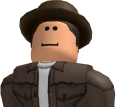
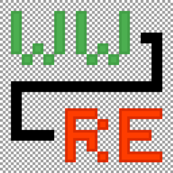
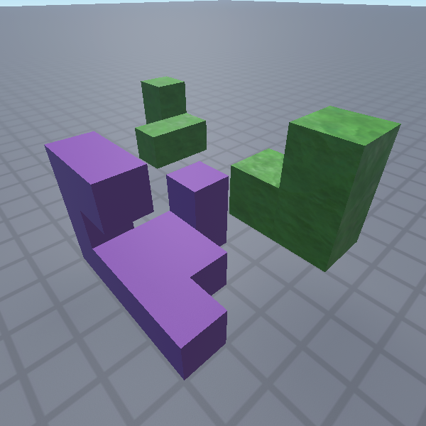
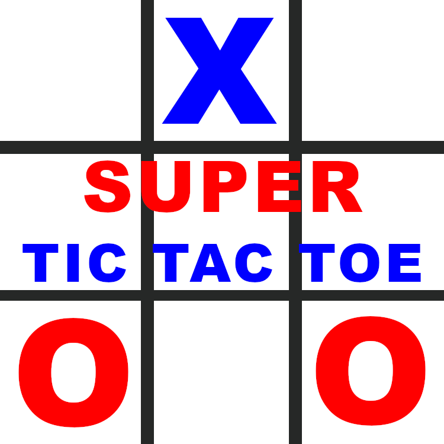

Hello. I am an information technology technician. I am also a Roblox developer and a front-end web developer. This means that I can help with making games on the mentioned platform and also I can make static websites. Here you can find some of my work. Enjoy your stay! Hopefully you will not regret that.
One of the first times when I could get hired to work for someone or Roblox. The game does not work because of the Roblox updates and because of the fact that it is not worth supporting anymore. In this game players could perform or watch shows while listetning to music. There was a wide variety of visual effects to use during a show. After every show players could rate what they saw. It was possible to buy cosmetic items after getting enough tickets - the game's currency. If you wish to see the game even in this bad state, click here.

The inspiration for this game was my old world from a game called Minecraft. I also added features to the Roblox version, which never made into the of the famous game. In the game players can create worlds, fight, talk and build. It is possible to customise character and world settings. Click here to play the game.

This is my open-sourced project. This system is like placing blocks in the game called Wool War: Roblox Edition but I added new things to it. The main thing is determining if a building tool in this project can place floating blocks. Click here to see my Roblox Devforum post about it or click here to go straight to the game's page.

This is my newest solo project. In this game players can play the iconic Tic Tac Toe but expanded and with extra rules. It makes the gameplay interesting and more fun. Click here to play the game. 2 players are needed to start a game.
I am also a web developer. I know three front-end web technologies - HTML, CSS and JavaScript. I can also host websites on GitHub, just like the website, which you are seeing right now. If you wish to see my other website, click here. I also know about Roblox web development but not much honestly. I can make a system, where a Roblox server tells to a Discord bot to make a specific message on a channel. I am ready for a challenge to do something more as a Roblox web developer.
Here are some of my social media. To talk to me about making a game and/or website. Use at least one of the following: